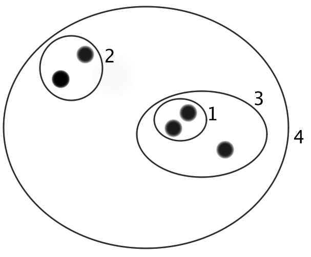
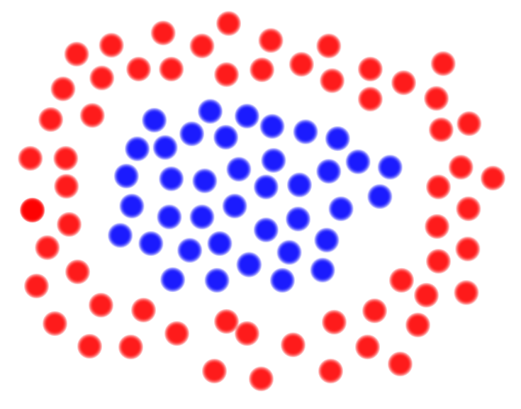

Clustering is the first of the four family of tasks that make up Data Mining. It is a group of Unsupervised Learning tasks, where an algorithm is given all the data objects and asked to group them together based on how similar they are (see Similarity Metrics). It's now always just about similarity, because sometimes you can have a non-globular cluster, meaning they aren't all similar to a central point.
K-means works by assigning every data point to one of K centroids, and then recalculating each centroid to be centered in the data points assigned to it. This continues until no data points change centroids, or some max iterations has been reached (to avoid jitter caused by a point almost equidistant from two clusters). K-means works when the data is known to be globular, but finding K requires more foreknowledge of the data than some other clustering algorithms. It is also very sensitive to noise.
numAttr = len(dataobjects[0]) centroids = randomCentroidPoints(k, dataobjects, numAttr) clusters = assignObjects(dataobjects, similarityMetric, centroids) changing = True maxIt = 1000 it=0 while(changing and it<maxIt): changing = False centroids = moveCentroids(clusters, numAttr) newclusters = assignObjects(dataobjects, similarityMetric, centroids) for i in range(0,k): for obj in clusters[i]: if not obj in newclusters[i]: changing = True clusters = newclusters it += 1
Agglomerative Hierarchical clustering beings by assigning each object to its own cluster. It then combines the two clusters that are closest together. After two clusters are combined, a centroid is calculated for the new cluster. As with K-means, you can use whichever Similarity Metric is most appropriate for the data. This works well when the data is known to be hierarchical in nature, however it's expensive in CPU and space complexity. Shown below is an image showing the order a set of objects would be added to the hierarchy.
DBScan is a density based clustering algorithm. It requires two parameters, a radius and a minimum number of points to be considered a center point. It begins by classifying every object as either noise, edge, or center points. Center points require minPoints be within radius distance of it. Edge points are required to be within radius distance of a center point, but don't have minPoints other points within radius distance of it. A noise point is not within radius distance of a center point. DBScan is excellent for eliminating noise points, but is very sensitive to clusters having different densities. Shown below is an example of two clusters that globular clustering algorithms would be unable to identify, but DBScan would identify.
